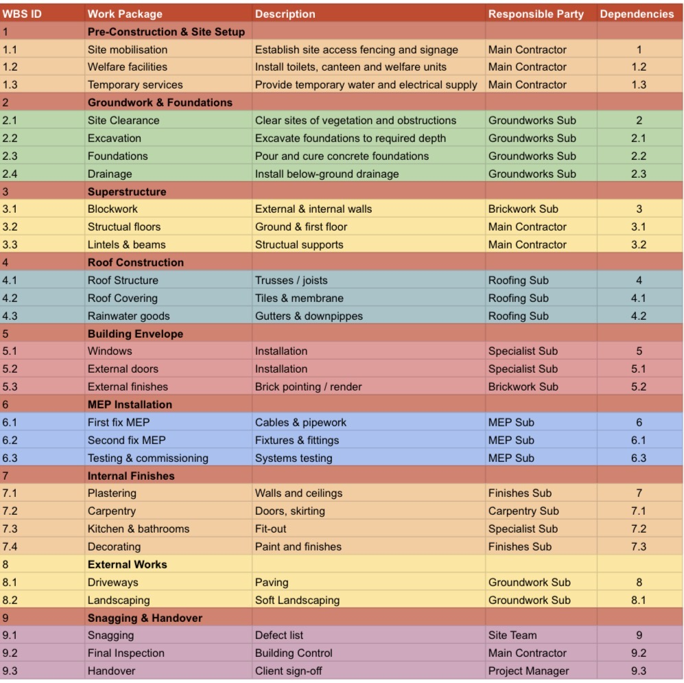
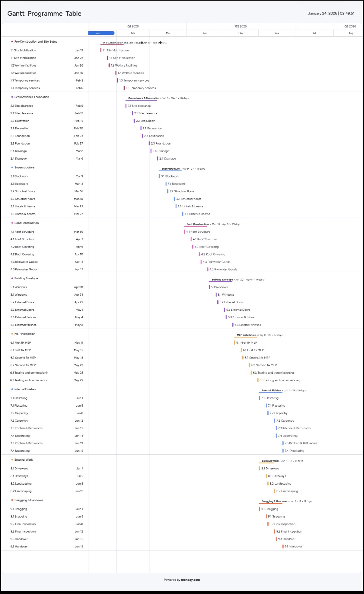
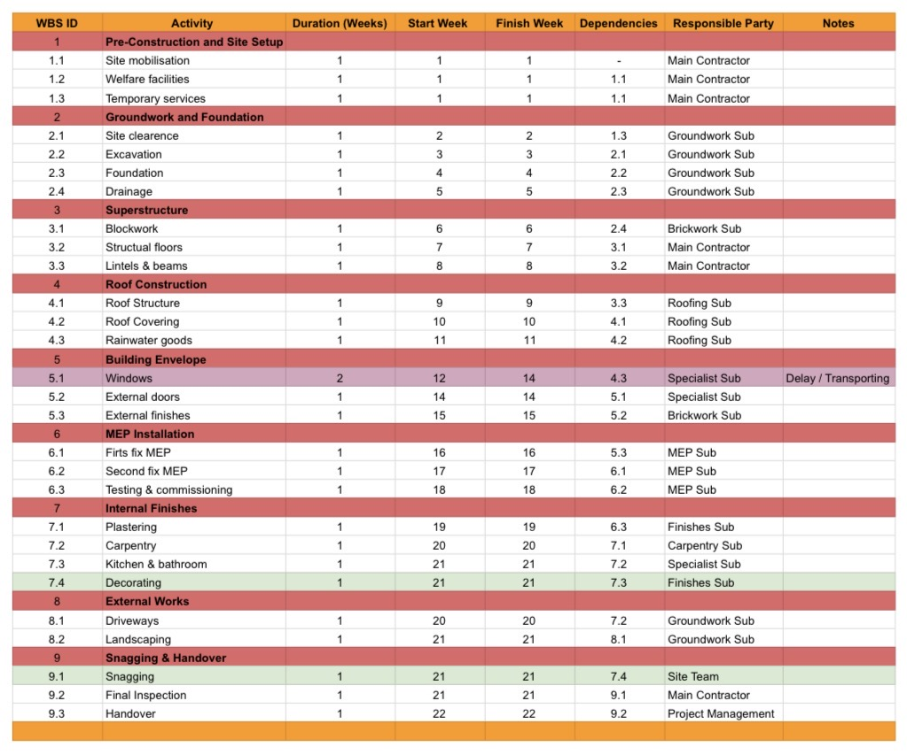
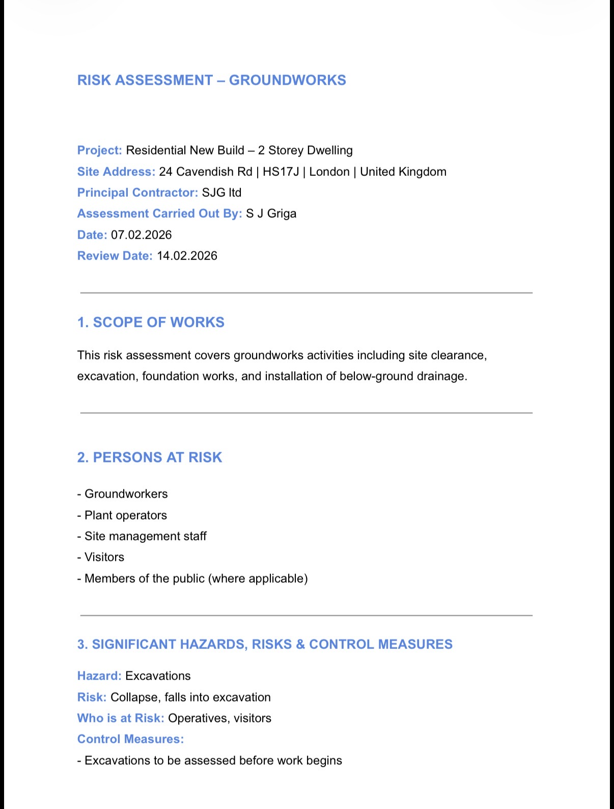
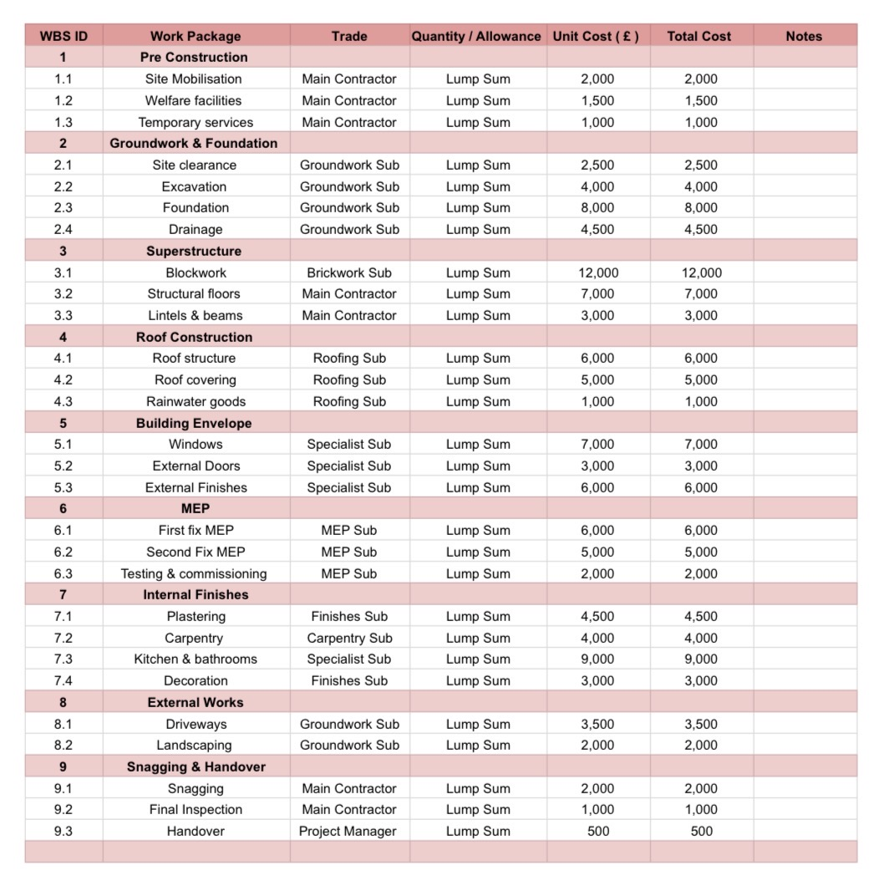
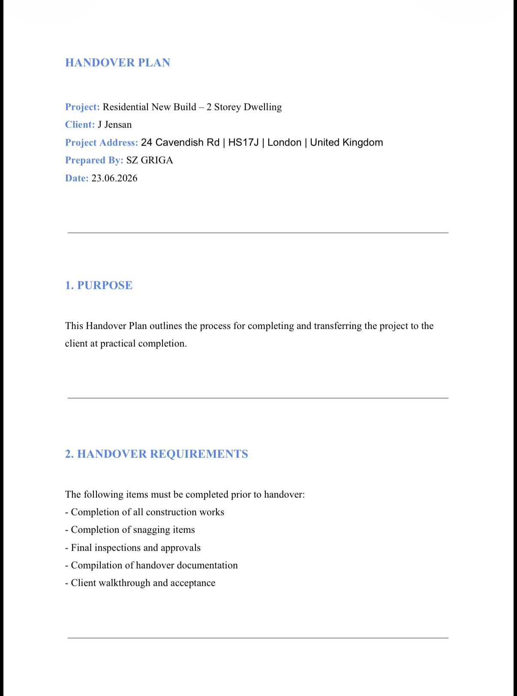

Project Overview
This portfolio simulation demonstrates my ability to manage a construction project across the full project lifecycle, from planning and cost control through to handover and defects management.
Project Objectives
- Plan and sequence construction works effectively
- Control time, cost, and risk
- Apply health & safety management in line with site practice
- Manage delays and contractual implications
- Deliver a structured handover to the client
Scope of Works
- Site setup and preliminaries
- Groundworks and foundations
- Superstructure and roof construction
- Building envelope (windows, doors, external finishes)
- Mechanical & Electrical installations
- Internal finishes
- External works
- Snagging, handover, and defects period
Key Deliverables
Planning & Programme
I developed the project plan using a structured Work Breakdown Structure (WBS) to define all construction activities and ensure full project scope coverage. Based on this, I created a 20-week baseline programme with logical sequencing and task dependencies aligned to construction phases.
The programme was designed to clearly identify the critical path and key milestones, enabling effective monitoring of progress and early identification of potential delays. This provided a structured framework for managing time, coordinating trades, and supporting decision-making throughout the project lifecycle.
- Developed structured WBS to define project scope
- Created 20-week baseline programme
- Established logical sequencing and task dependencies
- Identified critical path and key milestones
- Enabled progress monitoring and delay control

Skills demonstrated: planning logic, sequencing, dependency management
Construction Programme (Gantt Chart)
I developed a 20-week baseline construction programme based on the Work Breakdown Structure (WBS), ensuring all activities were logically sequenced from site setup through to handover. The programme incorporated realistic overlaps between trades, including envelope works, MEP installations, and internal finishes, to optimise efficiency without compromising quality or safety.
Key milestones, including Practical Completion at Week 20, were clearly defined, and the programme was aligned with the cost plan and interim payment structure to support financial control. The critical path was identified to enable effective monitoring of progress and early detection of delays, allowing for timely mitigation where required.
- Developed 20-week baseline programme from WBS
- Established logical sequencing from site setup to handover
- Integrated trade overlaps (envelope, MEP, finishes)
- Defined key milestones including Practical Completion (Week 20)
- Aligned programme with cost plan and interim payments
- Identified critical path for progress monitoring and delay control

Delay & Extension of Time (EOT)
A supplier delay in window delivery impacted activities on the critical path, threatening the overall project completion date. I assessed the delay against the baseline programme and confirmed its impact on the project timeline.
Based on this, I prepared and issued an Extension of Time (EOT) including a delay analysis, and updated the programme from 20 to 22 weeks. To minimise further impact, I resequenced internal works where possible.
This ensured the delay was formally managed and reduced the risk of additional disruption to the project.
- Identified delay cause (window supplier issue)
- Assessed impact on critical path
- Prepared EOT notice with delay analysis
- Updated programme (20 → 22 weeks)
- Implemented mitigation through resequencing

Skills demonstrated: delay analysis, programme control, contractual awareness
Health & Safety (RAMS)
I managed health and safety through structured RAMS documentation and clear site communication, ensuring compliance with CDM principles and standard UK construction practices.
I developed and implemented Risk Assessments and Method Statements (RAMS) for key activities, supported by site inductions and regular Toolbox Talks to maintain workforce awareness. Near miss reporting was also incorporated to proactively identify hazards and improve site safety performance.
This approach ensured that risks were effectively controlled, safety standards were maintained, and a proactive safety culture was promoted throughout the project.
- Managed health & safety in line with CDM principles
- Developed Risk Assessments and Method Statements (RAMS)
- Delivered site inductions and Toolbox Talks
- Implemented near miss reporting system
- Promoted proactive hazard identification and risk control

Skills demonstrated: CDM awareness, site safety management, communication
Cost Management
I managed project costs from initial estimation through to interim valuations and final cost review, ensuring effective cash flow control throughout the project lifecycle.
I developed a cost plan aligned with the Work Breakdown Structure (WBS) and construction programme, enabling accurate tracking of planned versus actual costs. Interim payment certificates were prepared to reflect work completed on site, supporting consistent cash flow and financial transparency between stakeholders.
I also managed retention and monitored cost performance, identifying any variances and supporting corrective actions where required. This approach ensured the project remained financially controlled and aligned with budget expectations.
- Developed cost plan aligned with WBS and programme
- Managed budgeting and cost allocation
- Prepared interim payment certificates based on progress
- Controlled retention in line with contract terms
- Monitored cost vs actual and identified variances
- Supported corrective actions to maintain budget

Skills demonstrated: budgeting, valuation, cash-flow management
Handover & Close-Out
I managed the project close-out through a structured handover process, ensuring all works were completed to the required quality standards prior to Practical Completion.
I coordinated handover planning, including final inspections, snagging, and the preparation of completion documentation. Practical Completion was certified once all major works were finished, allowing the Defects Liability Period (DLP) to commence.
During this period, defects were monitored and addressed to ensure the project met client expectations. All relevant documentation, including handover packs and project records, was issued to the client to support smooth project transition and future maintenance.
- Managed structured handover and close-out process
- Coordinated snagging and final inspections
- Achieved Practical Completion and certification
- Managed Defects Liability Period (DLP)
- Ensured defects were tracked and resolved
- Delivered full client handover documentation

Skills demonstrated: project close-out, documentation control, client handover
Project Outcomes
The project was successfully delivered within 1.1% of the original budget, demonstrating effective cost control and financial management throughout the project lifecycle.
A supplier-related delay was managed through an approved Extension of Time (EOT), ensuring the programme was adjusted without dispute and maintaining positive stakeholder relationships.
Health and safety risks were proactively identified and controlled through structured RAMS implementation, contributing to a safe working environment.
The project was completed with a structured handover process, including defect management during the Defects Liability Period, ensuring a smooth transition to the client.
- Delivered project within 1.1% of original budget
- Managed EOT without dispute, maintaining stakeholder alignment
- Controlled health & safety risks through RAMS implementation
- Delivered structured handover and defect management process
Lessons Learned
This project highlighted the importance of proactive planning, continuous monitoring, and clear communication across all stages of the construction process.
Early investigation of ground conditions proved critical in reducing cost risk and avoiding unforeseen issues during construction. In addition, managing key material lead times, such as window procurement, was essential to prevent delays impacting the critical path.
The project also reinforced that effective cost control requires continuous monitoring of planned versus actual costs, rather than relying on end-stage reviews.
Finally, maintaining clear and structured documentation throughout the project significantly simplified the handover and close-out process, ensuring a smoother transition for the client and reducing post-completion issues.
- Early ground condition analysis reduces cost risk
- Active management of material lead times prevents delays
- Continuous cost monitoring is essential for control
- Clear documentation improves handover and close-out
Tools & Methods Used
I utilised industry-standard tools and structured project control methods to support planning, documentation, and overall project management. Excel was used to develop the Work Breakdown Structure (WBS), construction programme, and cost plan, enabling clear organisation and tracking of project data.
Microsoft Word was used to produce key project documentation, including RAMS, Extension of Time (EOT), cost reports, and handover records, ensuring consistency and professional communication.
A structured folder-based system was implemented to organise all project information, allowing efficient document control, traceability, and ease of access throughout the project lifecycle.
These tools and methods reflect standard construction management practices, supporting effective coordination, control, and delivery of the project.
- Excel (WBS, programme, cost plan, data tracking)
- Word (RAMS, EOT, cost reports, handover documentation)
- Structured folder-based document control system
- Application of industry-standard PM processes and workflows
Why This Project Matters
This project demonstrates my ability to apply construction project management principles in a practical, structured way. It reflects how I plan and sequence works, manage change through EOT, control costs, maintain health and safety standards, and deliver a project through to handover.
The project showcases a full project lifecycle approach, highlighting my understanding of real-world construction processes, coordination, and decision-making.